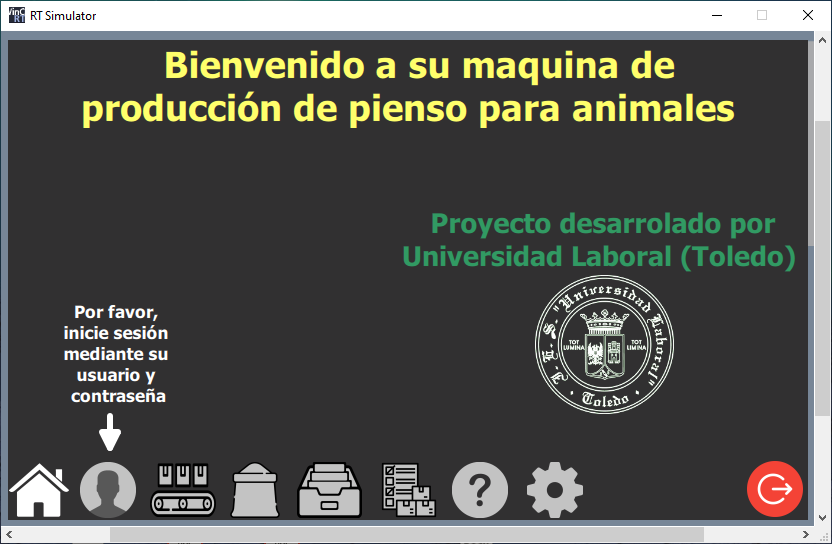
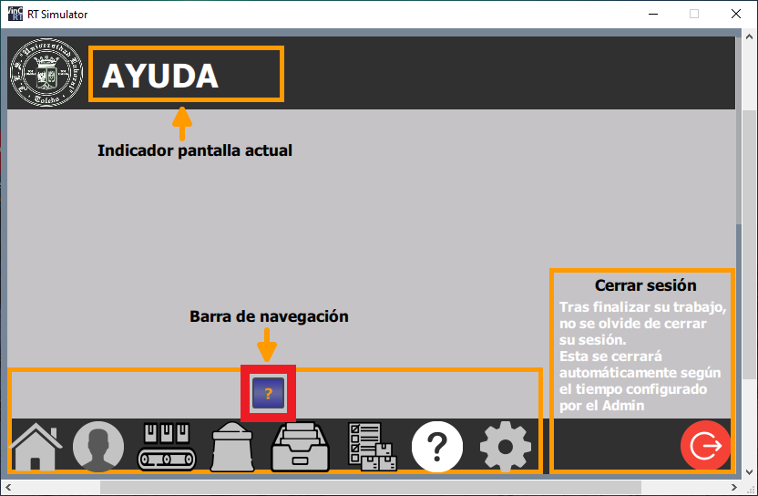
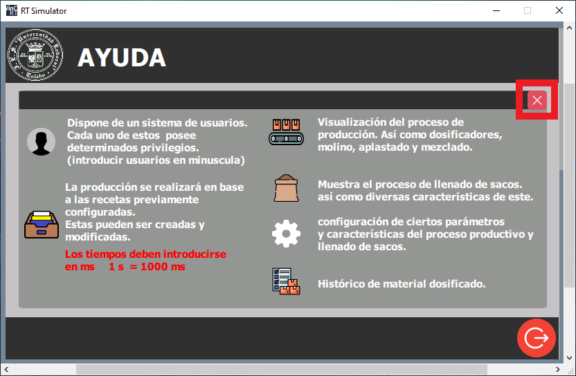
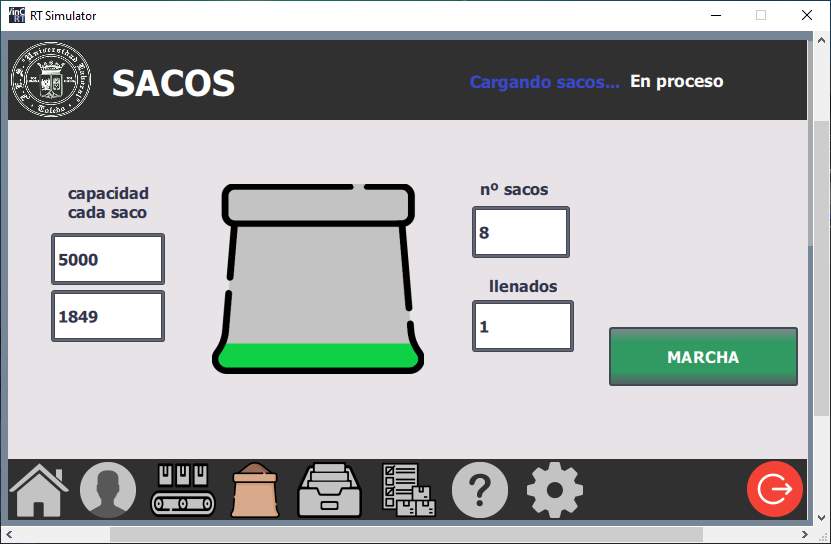

Máqina de producción de pienso para animales
Programación de PLC y HMI Siemens en Tia Portal.
Utilización de recetas y administración de usuarios.
Manual pantalla HMI
Empezamos con nuestra imagen raíz.
Esta nos da la bienvenida a nuestra máquina, y aloja la barra de navegación inferior para navegar por esta.
Pulsamos ayuda
Pulsamos ? para más información
Breve explicación de cada una de las pantallas accesibles desde la barra de navegación.
Pulsamos en x para cerrar.

Pulsamos en usuarios.

Esta tabla nos indica las restricciones de acceso para cada uno de los usuarios.
Así como el Tiempo de cierre automático de sesión.
Pulsamos botón verde para iniciar sesión
En la ventana emergente nos logueamos con nuestro usuario y contraseña.
Después cerramos la ventana.
Antes de poner en marcha la máquina, es fundamental introducir una receta.

Nos dirigimos a la pestaña de recetas.
En este caso vamos a seleccionar muestra de funcionamiento.
Esta receta contiene todos los productos.
Es una buena opción para visualizar el funcionamiento de la máquina.
Una vez introducida la receta, la cargamos en el PLC.

Nos dirigimos a la pantalla de producción. Pulsamos marcha para inicar la producción.

A continuación, se dosifican todos los productos en cascada. Tanto líquidos como sólidos.
Estos pasan directamente al mezclador.

Tras finalizar la etapa directo. En la etapa molido, los productos sólidos se dirigen al mezclador, pasando por el molino primero. Acompañado de los productos líquidos.

Inmediatamente después, se inicia la etapa de aplastado. Los sólidos son dosificados pasando por el aplastador.

Tras finalizar las etapas de dosificado directo, molido y aplastado. El producto se mantine el el mezclador el tiempo configurado. En este caso 4 segundos.

Una vez vez finalizada la producción, la máquina se encuentra parada a la espera que el llenado de sacos sea iniciado.
Al iniciarse, somos dirigidos a la pantalla llenado de sacos.
Disponemos de una animación orientativa. La cual nos muestra el nivel de carga actual de cada saco.

Si nos dirigimos a la pantalla de producción tambien podemos observar el proceso de carga de sacos.
En este caso el icono del mezclador ha cambiado de color. Del rosa al azul. Esto nos indica que este se encuentra girando en sentido contrario durante la carga de sacos.

Finalizado el proceso de carga de sacos. Podemos iniciar de nuevo otra producción con esta misma receta pulsando marcha. O introducir otra receta en la pantalla de recetas.
En la pantalla historial, visualizamos la cantidad de cada producto dosificado por nuestra máquina desde el último borrado.
Pulsando borrar historial podemos poner a 0 todos los contadores.


Mediante la pantalla de ajustes, podemos modificar los tiempos de funcionamiento o incluso eliminarlos introduciendo 0 ms.
Finalmente, tras la utilización de la máquina, es aconsejable que el usuario cierre sesión.
Esta será cerrada automáticamente al pasar un tiempo configurado.